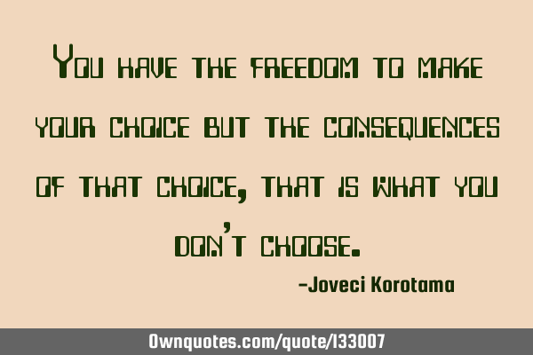
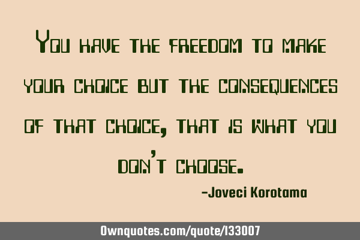

The curious mind wants to know
- What is freedom?
- Why should I have freedom?
- How difficult it is for me to work independently?
- How can I get the freedom of my work?
Top 10 Freest Countries and Territories in the World - 2021 Human Freedom Index
- Greenland
- Human Freedom
- Rangking
- Personal Freedom
- Economic Freedom
Freedom is one of the most important factors influencing a person's everyday quality of life. In addition to making it easier to live one's life, human freedom recognizes individuals' dignity and is inherently valuable, playing a vital role in human progress. Despite this importance, determining which countries' citizens have the most freedom can be challenging to do so objectively. Fortunately, individual indices can be used to determine which countries have the highest level of human freedom.
Introducing the Human Freedom Index
The Cato Institute in Washington D.C. and the Fraser Institute in Vancouver, Canada co-published the annual Human Freedom Index Report for 2021, which helps observe relationships between freedom and other social and economic phenomena. The Human Freedom Index Report for 2021 ranked 165 countries and territories in two distinct categories: Personal Freedom and Economic Freedom, which are then combined to form the final Human Freedom score. This score is then compared to that of other nations to determine which countries are the freest in the world.
Types of Freedom
Personal freedom is defined as an individual's freedom of opinion and expression, equality before the courts, security of private property, and freedom to come and go. For example, the First Amendment of the Bill of Rights in the United States Constitution lists several personal freedoms that are guaranteed to all U.S. citizens.
related images
.jpg)
.jpg) 

related post
HUMAN FREEDOM INDEX
The Human Freedom Index presents the state of human freedom in the world based on a broad measure that encompasses personal, civil, and economic freedom. Human freedom is a social concept that recognizes the dignity of individuals and is defined here as negative liberty or the absence of coercive constraint. Because freedom is inherently valuable and plays a role in human progress, it is worth measuring carefully. The Human Freedom Index is a resource that can help to more objectively observe relationships between freedom and other social and economic phenomena, as well as the ways in which the various dimensions of freedom interact with one another.